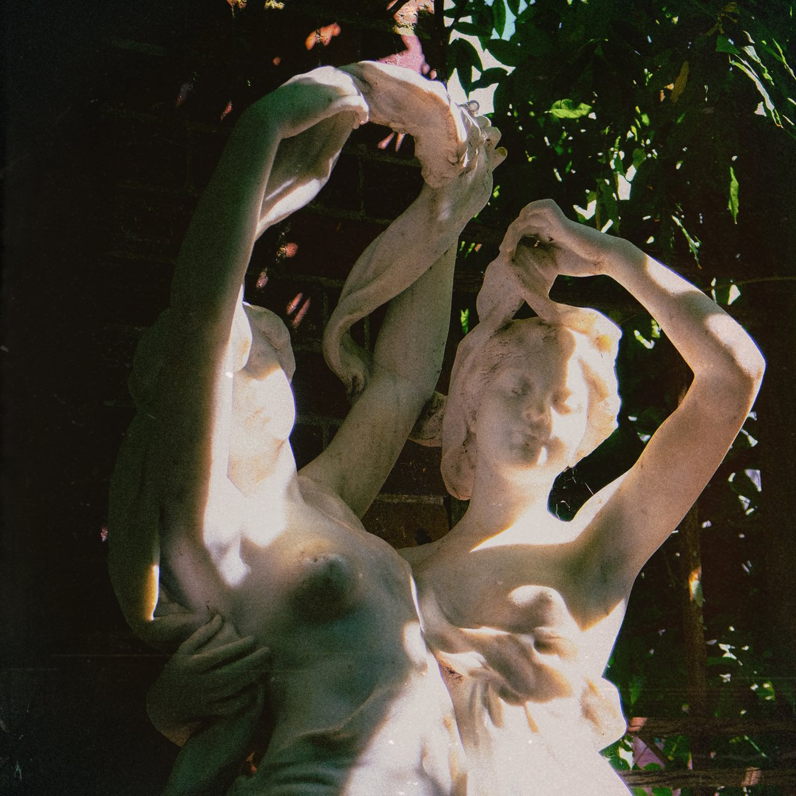
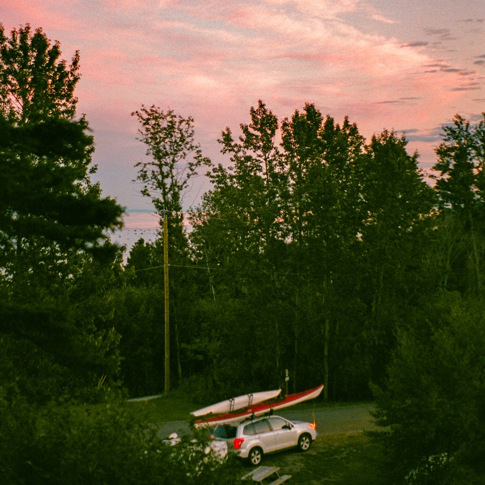
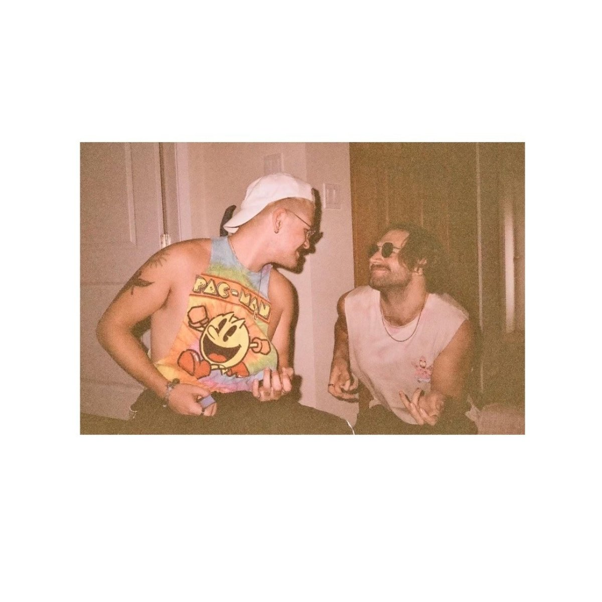

Modern Nostalgia (Single)
Single, July 23rd, 2026

Modern Nostalgia is the debut album from Dirty Aesthetic, released on August 13, 2026, across eleven tracks and 43 minutes. Where the band’s first EP, Sugar on the Rocks, followed the excitement and eventual collapse of first love, the album begins in the aftermath.
Across the record the songs work through grief, longing, strain on mental health, changing relationships, and the decisions people make when they are trying to move forward. The arrangements widen without losing the immediacy of the live show: guitars shift between sharp garage rock movement, melodic surf colour, and quieter passages that leave more room for the songs’ emotional weight.
Three songs arrived ahead of the album. “Irrational” came in May 2026, “Back to Me” in June, and the title track in July. The official video for “Modern Nostalgia” went up the night the record landed, and is on the watch page.

Single, July 23rd, 2026

Single, June 18th, 2026

Single, May 23rd, 2026

EP, January 9th, 2026
Single, August 29th, 2025
Single, February 23rd, 2025

Single, December 5th, 2024

Single, October 18th, 2024
Written and performed by Dirty Aesthetic. Mendy Noah Stein mixed all eleven tracks, and Taarish Sood is credited as recording engineer on ten of them. ℗ 2026 Dirty Music.
01In a Haze
Written byDylan Iwaschuk, Jacob Nadal, Bardia Tarjoman, Josh Chapman, Josh Seaman
Performed byDylan Iwaschuk vocalsJacob Nadal background vocals, guitarBardia Tarjoman guitarJosh Chapman drumsJosh Seaman bass
02Maybe
Written byDylan Iwaschuk, Jacob Nadal, Bardia Tarjoman, Josh Chapman, Josh Seaman
Performed byDylan Iwaschuk vocalsJacob Nadal background vocals, guitarBardia Tarjoman guitarJosh Chapman drumsJosh Seaman bass
03Chariot
Written byDylan Iwaschuk, Jacob Nadal, Bardia Tarjoman, Josh Chapman, Josh Seaman
Performed byDylan Iwaschuk vocalsJacob Nadal background vocals, acoustic guitar, vocalsBardia Tarjoman guitarJosh Chapman drumsJosh Seaman bass
04Defiant
Written byDylan Iwaschuk, Jacob Nadal, Bardia Tarjoman, Josh Chapman, Josh Seaman
Performed byDylan Iwaschuk background vocalsJacob Nadal background vocals, vocalsBardia Tarjoman acoustic guitar, background vocalsJosh Chapman cymbalsJosh Seaman bass
05Modern Nostalgia
Written byJacob Nadal, Dylan Iwaschuk, Bardia Tarjoman, Josh Chapman, Josh Seaman
Performed byJacob Nadal background vocals, guitarDylan Iwaschuk vocalsBardia Tarjoman guitarJosh Chapman drumsJosh Seaman bass
06Limerence Interlude
Written byBardia Tarjoman
Performed byBardia Tarjoman guitar
07Back to Me
Written byDylan Iwaschuk, Jacob Nadal, Josh Seaman, Josh Chapman, Bardia Tarjoman
Performed byDylan Iwaschuk vocalsJacob Nadal background vocals, guitarJosh Seaman bassJosh Chapman drumsBardia Tarjoman guitar
08Jaded
Written byDylan Iwaschuk, Jacob Nadal, Bardia Tarjoman, Josh Chapman, Josh Seaman
Performed byDylan Iwaschuk vocalsJacob Nadal background vocals, acoustic guitarBardia Tarjoman guitarJosh Chapman drumsJosh Seaman bass
09Am I Alone?
Written byDylan Iwaschuk, Josh Chapman
Performed byDylan Iwaschuk vocals, acoustic guitarJosh Chapman drums
10Irrational
Written byDylan Iwaschuk, Jacob Nadal, Josh Chapman, Bardia Tarjoman, Josh Seaman
Performed byDylan Iwaschuk vocalsJacob Nadal background vocals, guitarJosh Chapman drumsBardia Tarjoman guitarJosh Seaman bass
11Used to You
Written byJacob Nadal, Bardia Tarjoman, Josh Seaman
Performed byJacob Nadal background vocals, acoustic guitar, vocalsBardia Tarjoman acoustic guitarJosh Seaman bassDylan Iwaschuk background vocals
As published on the album’s Apple Music listing.